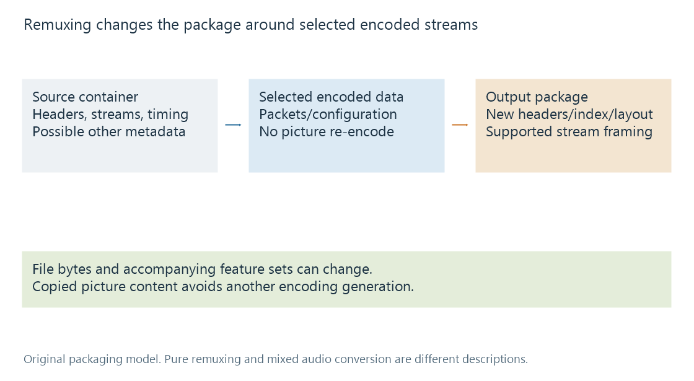

Remuxing media containers
Remuxing places existing encoded streams into another container or delivery package without re-encoding those streams.
Remuxing changes how encoded streams are packaged. A demuxer reads their packets from the source, and a muxer writes the selected streams into the output container or delivery representation.
The pictures need not be reconstructed and encoded again. That makes remuxing different from changing the video's resolution or reducing its encoded bitrate.

Preserved media, new package
| Part of the resource | Possible result |
|---|---|
| Encoded picture/audio content on copied paths | No new encoding generation |
| Container headers and indexes | Written for the output format |
| Packet framing and codec configuration | May need a compatible representation |
| Selected stream set | Can differ from the complete source set |
| Chapters, attachments and descriptive metadata | Depend on selection and output-format support |
A new file hash is expected when the container bytes change. It does not prove the pictures were re-encoded.
Conversely, retaining a codec label does not prove a remux. H.264 could have been encoded again into another H.264 stream. The actual stream operation is the relevant evidence.
The destination must represent the streams
A container is not a universal wrapper for every possible stream. Its format and the receiving parser impose requirements.
Codec data may need another framing convention. FFmpeg's bitstream-filter documentation describes transformations that can prepare encoded data for a destination without decoding pixels. Those are different from picture filters such as scaling or subtitle rendering.
Timing also needs correct interpretation. Writing another container can change time bases or timestamp origins while preserving intended presentation. Copying integers without accounting for their units would be a timing error, not a normal guarantee of remuxing.
A pure remux and a mixed job
If video and selected audio are both copied, the job can be a pure remux of those media streams. If video is copied while audio is decoded and encoded into AAC, the job combines video repackaging with audio transcoding.
Emby's Direct Stream category can include that mixed case. The product mode describes the video-preserving delivery plan; the individual stream operations supply the more detailed technical description.
Source features need another scope check
A Matroska attachment, chapter structure or subtitle track may have no identical representation in the destination. A remux can therefore preserve copied picture content while producing a resource with a different set of accompanying features.
The word “remux” in a filename is only a label. Stream mapping, format properties and the represented metadata establish what the actual resource retained.
See Also
- Stream copying and encoded packet handling
- Direct Stream in Emby
- Containers and Codecs
- Packet Timestamps
- Matroska Attachments